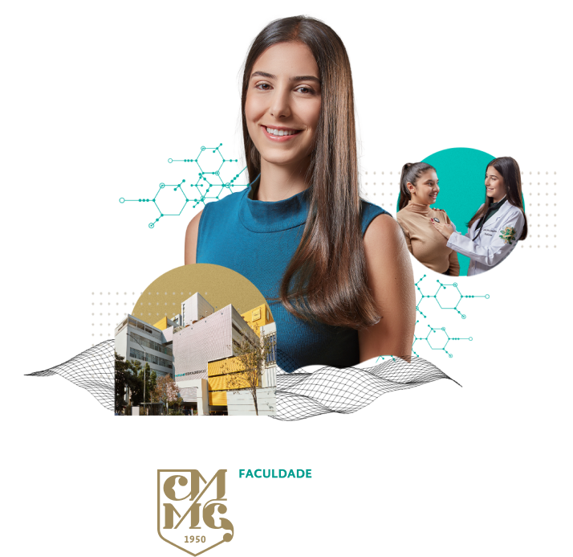

Chegou a hora de responder ao quiz
"Qual curso da área da saúde combina
com você?"
Queremos ajudar você a descobrir o seu lugar na área da Saúde. Você vai responder algumas perguntas simples, e suas respostas vão te levar a um curso que combina com seu perfil.
Vamos lá?
Clique em "Iniciar Quiz"

01
Quais características te definem melhor?

02
O que mais te atrai em um ambiente de trabalho?

03
Como seria uma rotina de trabalho perfeita para você?

04
Quais desses temas te interessam mais no dia a dia?